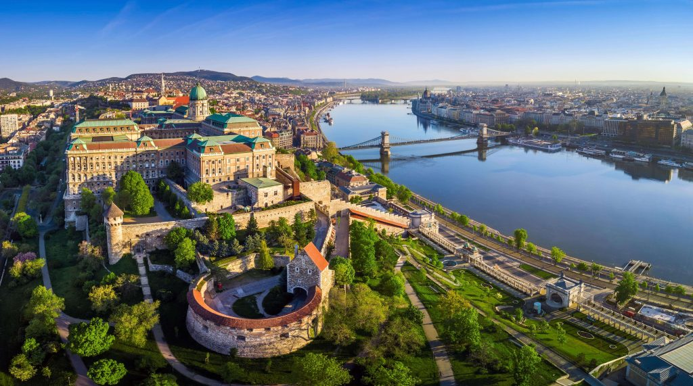

Budapest a világ egyik legszebb panorámáját nyújtó városa. A világörökségi helyszínhez a budai Várnegyed, a Duna két partja és az Andrássy út tartozik. A Várnegyed keskeny utcáiban gótikus és reneszánsz elemeket magukba foglaló házak láthatók. A Szentháromság téren áll a Mátyás-templom, amit 1250-ben kezdtek építeni. A Duna hídjai közül a legrégebbi és legismertebb a Lánchíd, amit 1839 és 1849 között építettek. Buda és Pest egyesítésének jelképe lett, ami 1873-ban vált hivatalossá. A Magyar Tudományos Akadémia megalapításával és a Parlament megépítésével az Osztrák-Magyar Monarchia második fővárosának jelentősége megnőtt. A ma városközpontban lévő Andrássy út egy akkor még szabályozatlan külvárosi területen épült ki átalakítva a környék városszerkezetét. 1893-96 között megépült a kontinentális Európa első földalattija ami további épületek létrehozásához vezetett.
